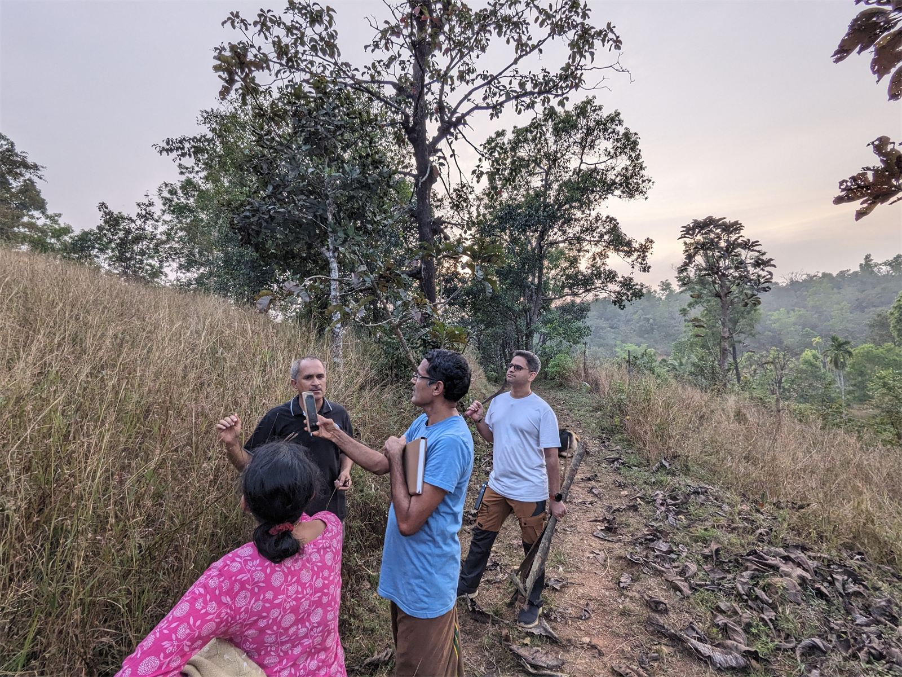
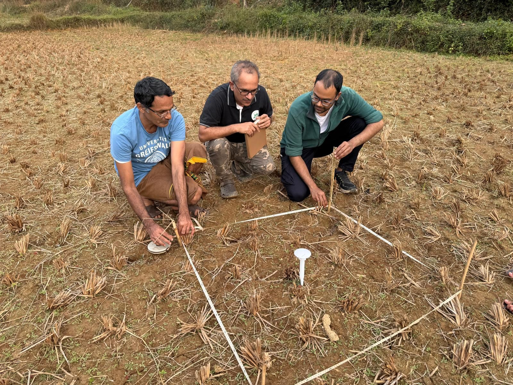

Recently, one of our team members, Swanand, joined Dr. Rohan Shetti and Dr. Mandar Datar on their week-long expedition to collect data from microclimate probes installed across the northern Western Ghats. He wrote a short article, as a reflection piece after the field trip: https://swanand95.substack.com/p/microclimate-research-part-1-overview. Posting a few key sections and notes from his article here.

Microclimate probes - these tiny yet remarkably robust probes silently record a wealth of information every 10 minutes – from temperatures just above and below the Earth's surface to air humidity and soil moisture. While we journeyed through this diverse landscape, our conversations naturally gravitated towards microclimate research. We explored how these localized atmospheric conditions differ from the broader regional climate a.k.a macroclimate and its implications for ecology, climate change and social change. The Western Ghats, a remarkably diverse landscape and biodiversity hotspot, served as the backdrop for our journey. As we encountered interesting people along the way, the importance of studying microclimates became increasingly evident to me.
Some important advances in microclimate research
Microclimate research has made significant strides in recent years, revealing the intricate relationship between fine-scale atmospheric conditions and ecological processes. When compared to macroclimate, microclimates exhibit rapid variations across both spatial and temporal scales [2]. This dynamic nature makes microclimate studies an indispensable component of ecological and biogeographical investigations [4], [5], as it represents the climate scale directly experienced by organisms and ecosystems, including humans. Microclimates play a pivotal role in shaping various ecological and biogeochemical processes like plant regeneration and growth, soil respiration and nutrient cycling [5]. These localized climatic conditions are intricately linked to species distribution and niche occupancy, creating strong feedback loops between organisms and their immediate environment. This interplay highlights the critical importance of microclimate research in understanding ecosystem dynamics. In recent years, microclimate research has gained significant traction, particularly in the context of terrestrial ecosystems, especially forests [1]. Extensive studies have been conducted to understand how forest canopies create unique microclimates, influencing understory biodiversity and ecosystem functions. Apart from forests, a significant literature is seen for specialized agroecosystems like vineyards [6] and Inland water body ecosystems [7]. These research efforts provide valuable insights for explaining, predicting, and managing terrestrial ecosystem features at the local scale. Moreover, they contribute to our understanding of how fine-scale patterns may influence or even generate larger global patterns in climate and biogeography. The success of microclimate studies in terrestrial ecosystems has inspired similar investigations in other contexts: aquatic ecosystems, agroecological systems and urban environments [5], [8]. It seems to me that these emerging areas of research promise to deepen our understanding of microclimate dynamics across diverse landscapes and their implications for ecosystem management regimes like restoration and conservation.
Microclimate management: A niche-construction in Anthropocene.
Read the context of this section here.
IPCC 2021 [9] started off as a CODE RED to humanity - unequivocally establishing the anthropogenicity of the global climate change and ecological crisis! In the era of the Anthropocene, where human activities significantly impact Earth's ecosystems, I think the concept of microclimate management emerges as a powerful tool for ecological stewardship. This approach goes beyond mere adaptation to changing environmental conditions; it represents an active form of niche construction, where organisms – in this case, humans – modify their local environment to enhance their survival and inevitably that of other species and biosphere at large. Examples of microclimate management as niche construction could include examples like: (1) agroforestry systems that optimize conditions for crop growth, (2) precision agriculture techniques that optimize soil moisture and temperature for crop growth, (3) restoration of wetlands to regulate local humidity and temperature, and (4) design of buildings and greener urban spaces that mitigate heat island effects, further making large-scale human habitation in-tune with nature etc.

By actively shaping microclimates, we're not just responding to environmental changes but actively participating in ecosystem engineering. By embracing microclimate management as a form of niche construction, we open up new possibilities for sustainable development and ecological restoration. This approach allows us to create resilient landscapes that can better withstand the impacts of climate change. As we move further into the Anthropocene, the ability to consciously and responsibly shape our microclimates may become a crucial skill for ensuring the health and sustainability of our planet's ecosystems.
Looking forward: bidirectional Implications for social-ecological complexity of the land use.

My journey through the microclimate research expedition culminated in a profoundly enriching stay at Mr. Balachandra Hegde's home, nestled in the deep woods of Sirsi, Karnataka. Mr. Hegde is a conservation activist, landscape Ecologist and practising farmer. This region, a testament to the Western Ghats' biodiversity, has rainforests punctuated by unique myristica swamps. As I reflected on our recent advances in microclimate research, it became increasingly clear that this field holds transformative potential for our understanding of ecological, biogeographical, and social systems (like urban and agroecological systems). By integrating microclimate data into our studies of social-ecological systems, we might significantly enhance our ability to explain and predict the behavior of these complex systems. It influences and gets influenced by all the diverse landscapes that exist on our planet - like forests, grasslands, water bodies, urbanscapes, agroecological landscapes, mining and powerplant-scapes, mountain and valleys etc. By incorporating microclimate data and research into our understanding of landscapes, we gain a more holistic view of the social-ecological complexity of different landscapes - with significant implications to the Planetary health.
The journey of discovery in microclimate research and local climate management is far from over – indeed, it is just beginning to reveal its full potential in shaping our understanding of the world and our place within it. Rather than viewing ourselves as passive recipients of environmental conditions, we recognize our role as active participants in shaping local ecosystems and embrace social-ecological stewardship. This perspective aligns with, or let's say it is in the direction towards, the growing understanding of humans as integral parts of nature, not separate from it.
References
- [1] Microclimate in Forest Ecosystem and Landscape Ecology | BioScience | Oxford Academic. https://academic.oup.com/bioscience/article-abstract/49/4/288/228849
- [2] Ten practical guidelines for microclimate research in terrestrial ecosystems - De Frenne - Methods in Ecology and Evolution - Wiley Online Library. https://besjournals.onlinelibrary.wiley.com/doi/10.1111/2041-210X.14476
- [3] Woesik, F. van et al. Managing the Local Climate. 1–154. https://doi.org/10.3362/9781788532266
- [4] Microclimate, an important part of ecology and biogeography - Kemppinen - 2024 - Global Ecology and Biogeography - Wiley Online Library. https://onlinelibrary.wiley.com/doi/10.1111/geb.13834
- [5] Kemppinen, J. et al. Microclimate, an inseparable part of ecology and biogeography. Preprint can be accessed at this link: https://doi.org/10.5281/zenodo.10514496
- [6] Moukarzel, Romy, et al. "Bunch microclimate influence amino acids and phenolic profiles of Pinot noir grape berries." Frontiers in Plant Science 14 (2023): 1162062. https://doi.org/10.3389/fpls.2023.1162062
- [7] Cheng, Yanyan, et al. "Impacts of water bodies on microclimates and outdoor thermal comfort: Implications for sustainable rural revitalization." Frontiers in Environmental Science 10 (2022): 940482. https://doi.org/10.3389/fenvs.2022.940482
- [8] Zhou, Yichen, Na An, and Jiawei Yao. "Characteristics, progress and trends of urban microclimate research: a systematic literature review and bibliometric analysis." Buildings 12.7 (2022): 877. https://doi.org/10.3390/buildings12070877
- [9] IPCC 6th assessment reports; 2021 (https://www.ipcc.ch/report/ar6/wg1/), 2022 (https://www.ipcc.ch/report/ar6/wg2/) and 2023 (https://www.ipcc.ch/synthesis-report/).
- [10] Steenbergen, Femke van Woesik, Frank van. "Managing Microclimates — a 'Third Way' to Combat Climate Change." Down To Earth, March 2, 2023. https://www.downtoearth.org.in/climate-change/managing-microclimates-a-third-way-to-combat-climate-change-88020
- [11] Castelli et al. "Mesoclimate Regulation Induced by Landscape Restoration and Water Harvesting in Agroecosystems of the Horn of Africa." Agriculture, Ecosystems & Environment 275 (April 1, 2019): 54–64. https://doi.org/10.1016/j.agee.2019.02.002
- [12] Hoang, Long. "3 Pillars for Microclimate Management." TheWaterChannel, December 13, 2022. https://thewaterchannel.tv/thewaterblog/3-pillars-for-microclimate-management/
Enjoyed this post?
Field expeditions like this one are funded by supporters. Help us keep the probes running.